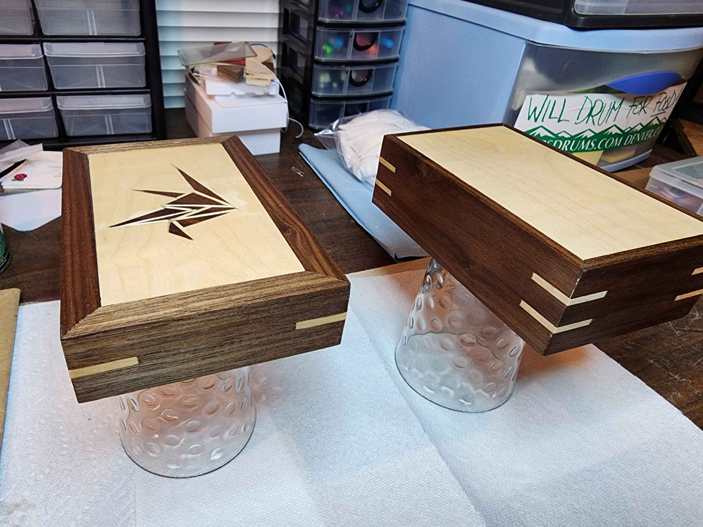

Lucas Samaniego - Resume Media
Google Docs Resume link.
Autonomous Underwater Vehicle (AUV)
Kraken Submersibles is New Mexico State University's first entry into RoboSub, an international autonomous underwater vehicle (AUV) competition. I served as Embedded Systems & Autonomy Lead on a 7-person team, starting from zero in September 2025 with no prior team history, no established budget, and no existing architecture to inherit. The team placed 33rd out of 58 teams overall. The team's website (which I built, linked below) scored 18th of 58 international teams on that portion of judging, and the vehicle qualified at competition.
GoPro underwater footage of the Nautilus AUV qualifying for Semi-Finals during the RoboSub2026 competition.
Early ROV test run at university pool verifying ROV capability before proceeding to autonomous function.
Qualifying run footage - testing at midnight in the hotel pool during the competition
4-Channel Differential JFET Preamp + ADC PCB Design To Process Hydrophone Audio via I2S
Designed a custom board to process analog hydrophone data for Time Difference of Arrival (TDoA) onboard calculations by the AUV computer. Differential JFET Preamp & Filtering design inspired by here, adding safety functionality such as reverse polarity protections and various other design additions.
KiCad Schematics
TODO: paragraph describing the schematics.

System Architecture Diagrams
TODO: paragraph describing the data architecture.
Misc
TODO: paragraph for the misc images (folder still being updated).
Team Website & Media
Created the website for the NMSU Kraken Submersibles RoboSub 2026 team, which placed 18th out of 58 teams (full results).
Planned and edited the team introduction video.
Rubik's Cube Simulation Project
Through the Electrical & Computer Engineering curriculum at NMSU, there is an Embedded Systems course (EE 112)
which features a final project in Arduino C++ which allows freedom of design to the
student as long as it implements the topics learned throughout the course. For my project, I created a
simulation of a Rubik’s Cube.
I wrote a program that utilizes an LCD Shield integrated with an Arduino Uno to display a Rubik’s cube
graphically in real time as it is being manipulated by moves entered through the Arduino GUI.
The Rubik’s cube is shown both in a dimetric perspective, as well as in an unfolded 2D representation on the LCD
screen.
There is also ASCII imagery representing the unfolded 2D map as output to the Serial monitor.
The simulation of the Rubik’s cube was achieved through the use of arrays corresponding to each of the
fifty-four spots which can be manipulated, but must always remain consistent with the behavior of a real-life
model.
(e.g. the center square of each face never changes, and there are always nine of each of the six colors)
The moveset, or possible turns of a cube, can be simplified to six types of turns, where every other type of
manipulation can be defined as a combination of those six turns. Those six turns are:
- Front - The closest third of the cube is turned ClockWise (CW)
- Right - The right third of the cube is turned CW
- Up - The top third of the cube is turned CW
- Left - The left third of the cube is turned CW
- Back - The back third of the cube is turned CW
- Down - The bottom third of the cube is turned CW
The above video is the demo showcasing my project that simulates a Rubik's Cube opn an Arduino Uno with a TFT LCD Shield. In the video, I send a series of inputs(turns) through the Arduino GUI, that manipulate the cube from a solved state to the pattern matching the physical cube on the webcam. The pattern gives the illusion of a cube inside of a cube inside of a cube, and I used it because it's my favorite pattern that can be made on a Rubik's cube. As the inputs are sent to the Arduino Uno, the LCD screen updates both the unfolded 2D and 3D dimetric map of the virtual cube.
github repository with Arduino C++ .ino file

Music Box
TODO: description of the Music Box project.
Box
TODO: paragraph describing the box.
Board
TODO: paragraph describing the board.
Design
TODO: paragraph describing the design.
Current State

TODO caption - coated.jpg
Dencor - Project Manager
As the project manager for a small tech company working with Energy Management Systems (EMS), I facilitated several projects to completion, one of them being the installation of an EMS at the Kong Headquarters (a dog toy manufacturer), in Golden, CO. This project included:
- Planning: EMS system is custom configured to meet client needs, and assembled in our warehouse.
- Quoting: Based on the final configuration, I create a quote of time and materials and present it to the client.
- Install:
- Point-Of-Contact: I work closely with their building manager, and act as the point of contact, extending after installation

Scratch Self-Learning Exercise "Cake Calamity"
While on break from school, I continued to further my education and skills. I took part in Harvard's self-paced
CS50x Course. One of the modules in this course is
to program a game in Scratch, which was an excellent experience being exposed to using this programming
environment, and I especially hope more young students will have access to environments like this in the
future.
My game features rule-based behavior displayed in enemies that elevates the complexity-feel of what would
otherwise be a
very simple game experience. This self-paced course, as well as the eclectic collection of other projects in
this course,
helped me to strengthen my programming skills to compliment my ECE degree. Before this class and project, I
wasn't even aware
of Scratch, so this experience broadened my horizons.

link to playable game
Planet Labs UHF Antenna work
From January 2020 through to the end of 2024, I was an on-call UHF Technician for Planet Labs PBC, A San Francisco-based satellite imaging company. NMSU's now demolished Thomas & Brown building hosted one of their Ultra-High Frequency (UHF) ground stations. If any issues arose, I was called to troubleshoot the antenna, make repairs, or replace parts, while coordinating with a Ground Station Engineer at their HQ.
video showing the testing of full range of motion on an azimuth motor before physical replacement on the antenna

UHF Antenna after replacing azimuth/elevation motor, and performing calibration
3D Printing
Several years ago, I took a course which allowed me to become proficient in SolidWorks CAD as well as gain
experience with drafting 2D blueprints alongside 3D models. As a result, I
eventually acquired my own 3D printer, an Ender 3 v2. Since getting it in 2021, I have spent much of
my free time creating models in SolidWorks, SketchUp, and Autodesk CAD, and utilizing the combination of them as
a resource for both problem solving and entertainment purposes.
Much of my time was spent learning to work with OSS such as Cura Slicer to dial in a printer with both my own
personal models as well as models posted online to sites like Thingiverse.
The following is an example of a part I modeled and printed for a Biomedical lab that commissioned me for a
hex-wrench. The requirements were that it needed to be small enough to be operable within the crevices of
equipment, as well as designed in a way that would allow it to be sanitized to cleanroom standards.
3D printing log [incomplete].
Wrench 3D print


wrench modeled and printed for clean-room use. Made with SolidWorks
printed using Ender 3 v2 printer with PLA
Other
5k (3.1 mile) run log
I have two dogs, both border collies
Yuki

and Rip